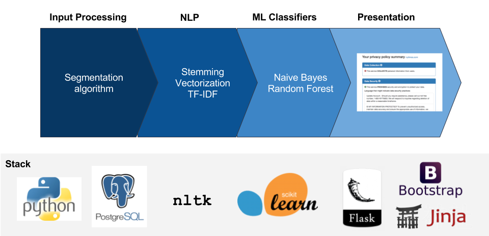

Consumers sign billions of pages of legal contracts every year with a few simple clicks without reading or understanding the contents of those contracts. Website and web service privacy policies are generally opaque to users. BeforeIAccept uses natural language processing and machine learning to digest privacy policies for consumers. It answers six basic privacy-related questions about websites and serivces:
Source code for this project is available on Github. All code is provided under the 3-Clause BSD license.
BeforeIAccept is a project developed for the 2017 Insight Data Science Remote Program. It uses a combination of natural language processing and machine learning to classify key data practices that may be present in typical website privacy policies.
Privacy policies can be entered by their URL or via raw text. The text is then parsed into segments, roughly corresponding to paragraphs and associated section headings in the policy. It is then de-capitalized and stripped of punctuation and common English words. The text segment is vectorized into a bag-of-words model and normalized with a TF-IDF metric to de-emphasize more common terminology over terminology that may be unique to a particular segment.
Once in this form, the vectorized text segment is processed using a series of six binary classifiers, one for each of the six policy practices listed above. Most models are in the form of naive Bayes classifiers. Data retention, third party sharing, and user access/deletion assessments are made using random forest classifiers due to improved accuracy.
Finally, results are presented to the user on a simple dashboard. Users are allowed to drill down and view specific segments that were tagged in a certain category.
BeforeIAccept models are trained on the OPP-115 corpus from UsablePrivacy.org. Please see the paper listed below for details on the development and content of the dataset.
The creation and analysis of a website privacy policy corpus. Shomir Wilson, Florian Schaub, Aswarth Abhilash Dara, Frederick Liu, Sushain Cherivirala, Pedro Giovanni Leon, Mads Schaarup Andersen, Sebastian Zimmeck, Kanthashree Mysore Sathyendra, N. Cameron Russell, Thomas B. Norton, Eduard Hovy, Joel Reidenberg, and Norman Sadeh. In Proceedings of the 54th Annual Meeting of the Association for Computational Linguistics, Berlin, Germany, August 2016.